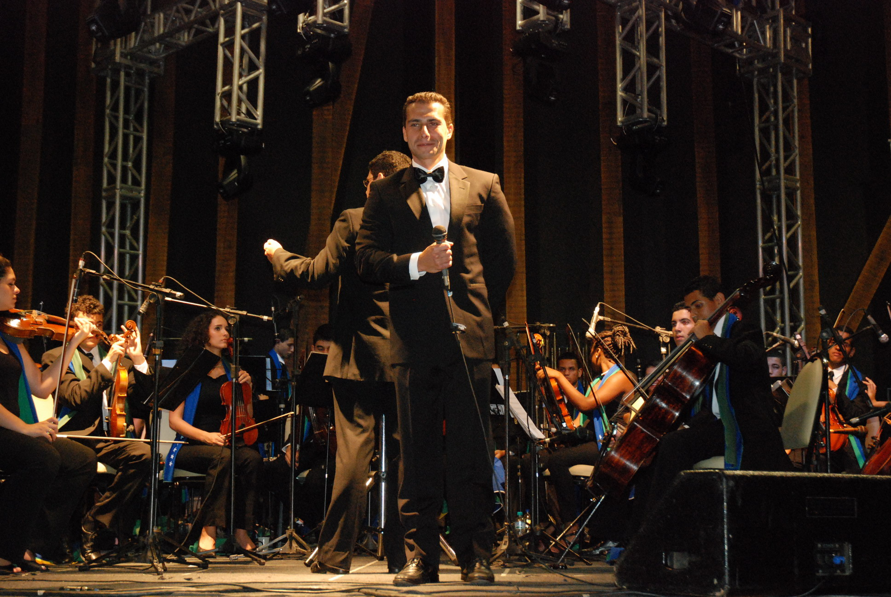
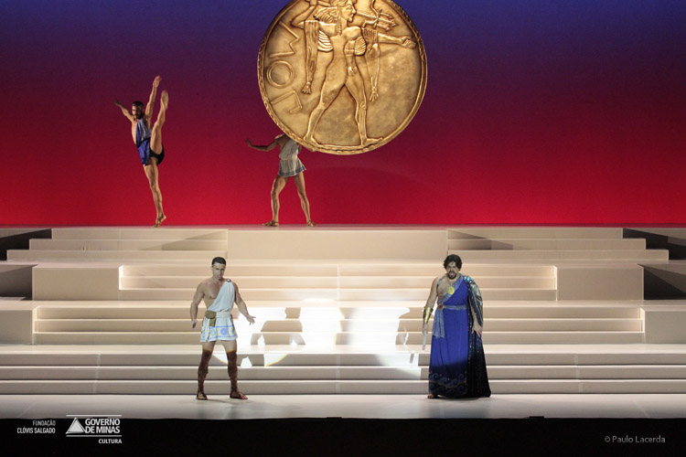
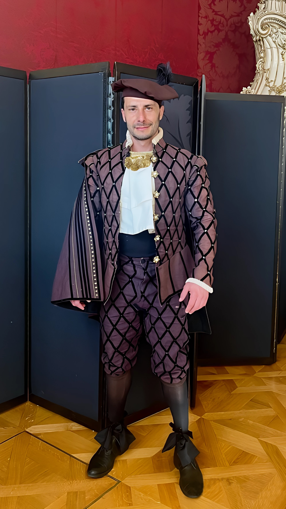

Explore
Explore

Cachoeiro de Itapemirim, 2010Uma experiência próxima, elegante e emocionante
Uma noite emocionante com grandes melodias, entre o teatro musical, a ópera e o crossover clássico.
Um encontro íntimo entre voz, palavra e melodia, com repertórios que atravessam gerações e continuam encontrando novos sentidos ao vivo.
Conheça o concertoQue alegria ter você aqui
Este espaço reúne um pouco da minha voz, da minha história e da minha paixão pela música: da tradição lírica às canções que atravessam gerações, sempre com o desejo de tocar o coração de quem escuta.
Assista ao vídeo e seja muito bem-vindo ao meu mundo musical.
Conheça minha trajetóriaUma trajetória entre palcos e encontros
Ópera, televisão, crossover e redes sociais, levando a força do canto lírico para cada vez mais pessoas.


Música gravada
Três momentos de uma trajetória entre romantismo, repertório lírico e crossover.
Explore os álbuns